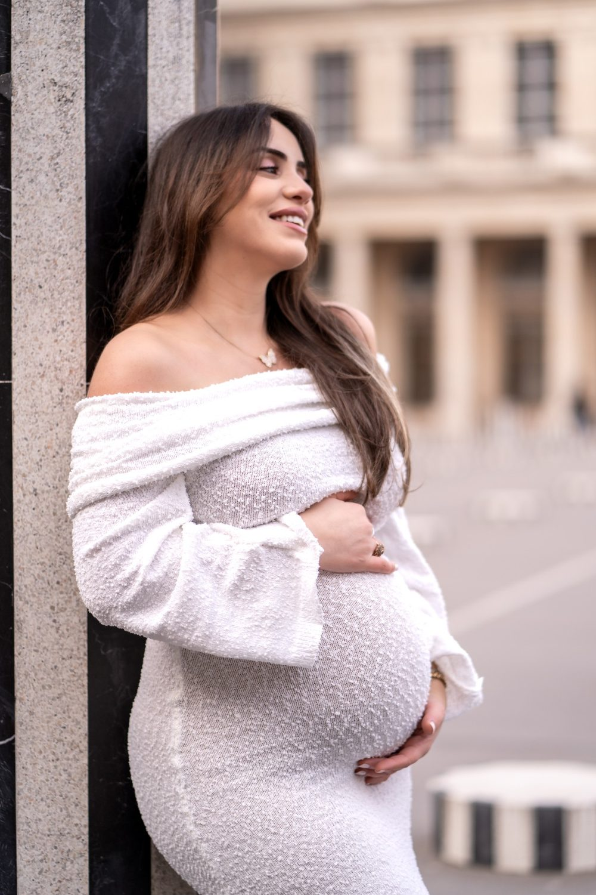
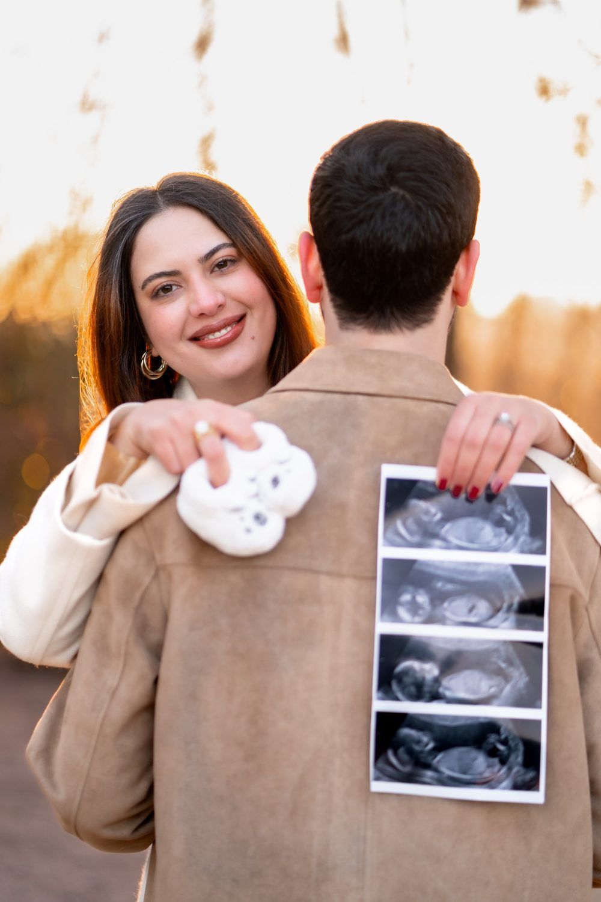
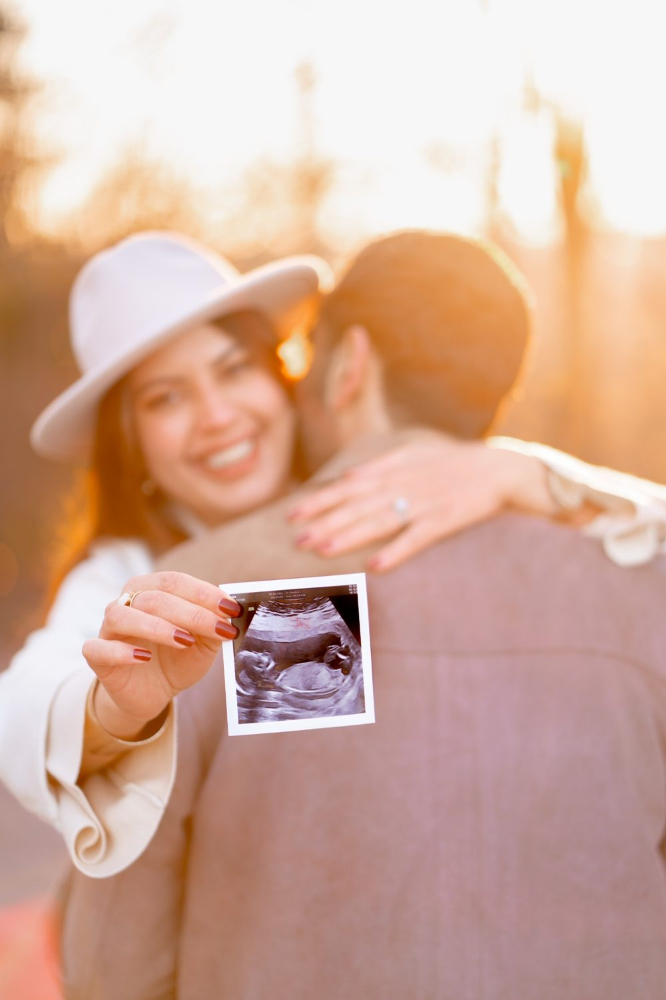
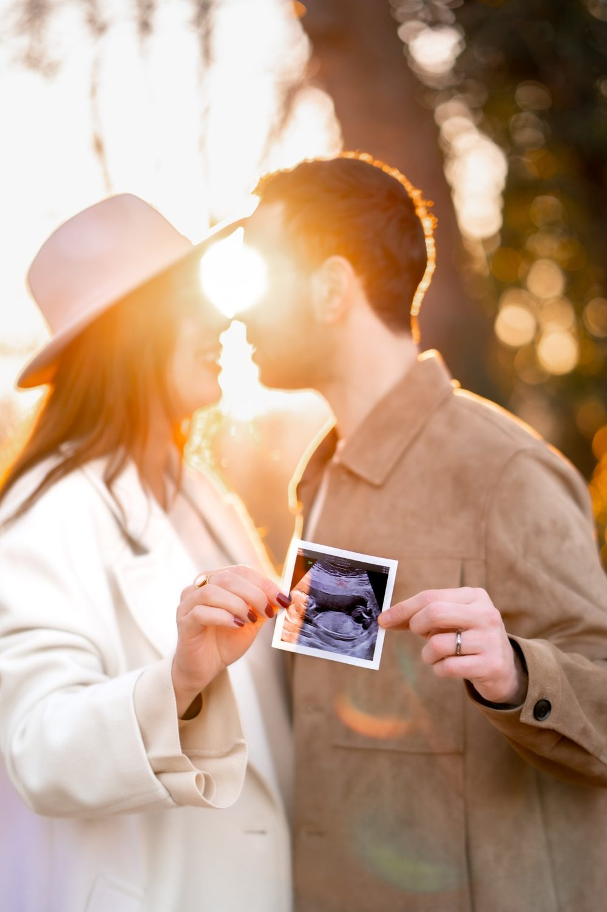

Séance photo grossesse à Paris 3e
Une séance grossesse garde ce temps d'attente, le ventre arrondi, les mains qui se posent dessus, les mots que vous murmurez au bébé. Une séance à Paris 3e, c'est aussi la possibilité de varier les ambiances entre Square du Temple et Rue des Francs-Bourgeois.

Où faire votre shooting
Un shooting grossesse à Paris 3e se fait au calme au Square du Temple, puis devant la pierre d'une cour de la Rue des Francs-Bourgeois. Dans le jardin à l'anglaise, assise sur un banc près des rocailles, vous posez les mains sur le bébé. Une cour pavée apporte ensuite un fond neutre qui met en valeur une robe fluide. Si vous le souhaitez, une courte séquence filmée garde les mots murmurés et le mouvement du tissu, à un rythme lent adapté à votre fatigue.
Nos lieux pour cette séance
Square du Temple
Jardin à l'anglaise avec rocailles. Un décor de nature calme pour poser sans fatigue, avec des bancs et de l'ombre.
Rue des Francs-Bourgeois
Hôtels particuliers et boutiques. Des rues et des façades pour une séance plus urbaine et décontractée.
Carreau du Temple
Halle métallique du XIXe siècle devenue lieu culturel.
Musée Picasso
Hôtel Salé et sa cour intérieure.
Pour que tout se passe bien
Cours pavées, murs de pierre, boutiques de créateurs. Les cours intérieures captent une lumière douce même par temps couvert.
La séance se fait idéalement entre la 28e et la 35e semaine, quand le ventre est bien visible et que vous êtes encore à l'aise. Elle dure environ une heure, à votre rythme, avec des pauses.
Les trottoirs du haut Marais sont étroits et pavés : prévoyez des chaussures plates pour marcher entre deux décors, et une tenue souple. Le jardin offre des bancs pour vous reposer entre les prises, ce qui rend la séance plus douce pour la future maman.
À Paris 3e, vous êtes à Métro Temple, Arts et Métiers, Filles du Calvaire : nous préparons l'itinéraire entre les lieux avec vous.




Avant de nous écrire
Où faire un shooting grossesse à Paris 3e quand on ne veut pas trop marcher ?
Pour un shooting grossesse à Paris 3e sans trop marcher, le Square du Temple réunit l'essentiel : verdure, rocailles et bancs pour se poser. Nous construisons la séance autour de ce jardin, avec un court passage dans une rue voisine si vous le souhaitez.
Quel mois de grossesse choisir pour une séance photo dans le Marais ?
Pour une séance photo grossesse à Paris 3e, beaucoup de futures mamans choisissent la fin du deuxième trimestre ou le début du troisième, quand le ventre est bien visible et la marche encore confortable. Nous en parlons ensemble selon votre forme et la saison.
Comment venir à Paris 3e ?
Métro Temple, Arts et Métiers, Filles du Calvaire. Nous nous déplaçons avec notre matériel photo et vidéo.
À quel moment faire la séance photo de grossesse ?
Entre la 28e et la 35e semaine d'aménorrhée en général, quand le ventre est visible et que vous restez mobile.
Parlons de votre mariage
Demander un devisGrossesse ailleurs en Île-de-France
© Le Couple Photographe · Photographe de mariage Paris & Île-de-France · Mis à jour le 10 octobre 2026
Demander un devis